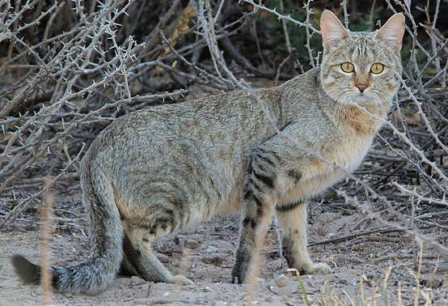
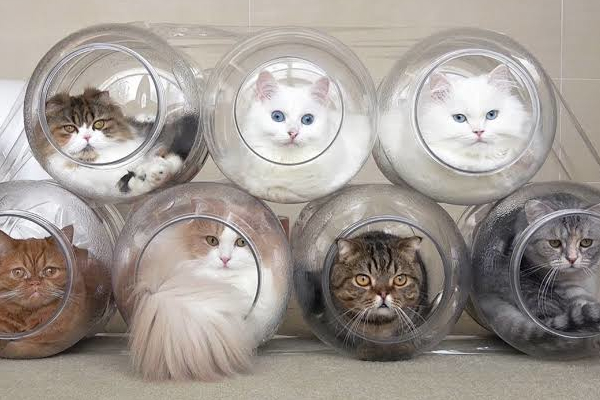
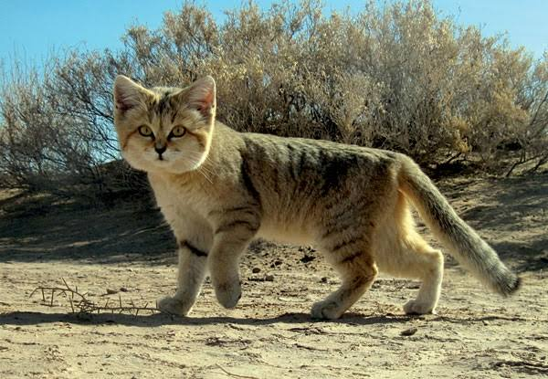
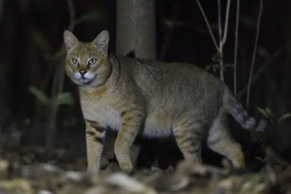
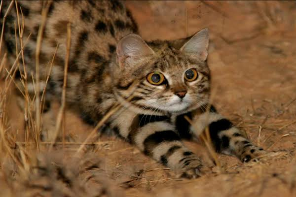
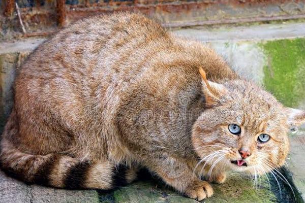
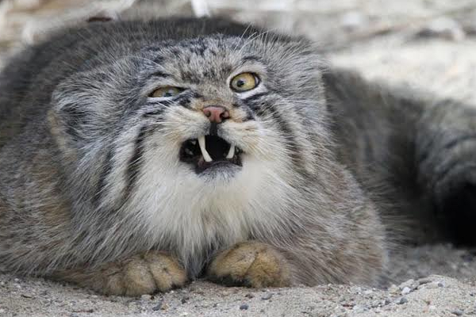

Felidae
Felis silvestris - Gato-selvagem

Felis silvestris cattus - Gato-doméstico

Felis margarita - Gato-do-deserto

Felis chaus - Gato-da-selva

Felis nigripes - Gato-bravo-de-patas-negras

Felis bieti - Gato-chinês-do-deserto

Felis manul (Pallas, 1776) - Gato-de-pallas ou manul
